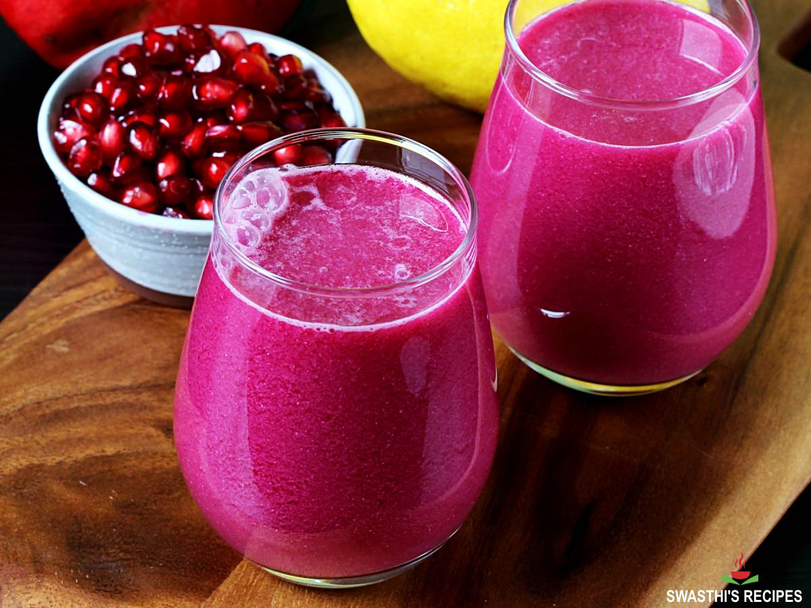

DRINK'S & DRUNK'S restaurant
.
-
DRINK'S & DRUNK'S
DRINK'S & DRUNK'S restaurant is a unique,famous and well-known restaurant known through out the world. it was established on 14th september-2010.This restaurant have a variety of tastes of drinks and it only serves drinks all kinds od drinks. This restaurant is also known for its taste and even for its view and management services. That is why this restaurant is well known through out the world for its amazing designing and architecture inside the restaurant the beautiful view adds an amazing freshness to the restaurant so the customers enjoy their drinks. And this restaurant is a best place for family, couples and friend circles to visit its best suitable for all to have a drink and to enjoy.This restaurant also have pools and sport items to enjoy and some large lakes and ponds for an exciting view.With lots of birds and music.A perfect place for everyone to enjoy.
JUICES:
- ORANGE:
COST PRICE:
Rs.310Rs.220
RECIPE:
Ingredients
- 6 medium
- a pinch of black salt (sanchal) , optional
- APPLE:
COST PRICE:
Rs.310Rs.220
RECIPE:
Ingredients
- 2 cups strawberries, tops removed
- 1 medium Red Delicious apple, peeled and cored
- 1 tablespoon chia seeds, optional
- BANANA:
COST PRICE:
Rs.310Rs.220RECIPE:
This delicious and creamy banana juice recipe is made from ripe banana, apple, milk and sweetener. ... Ingredients
- 2 large ripe banana (peeled and sliced)
- 1/2 medium apple (peeled, cored, and coarsely chopped)
- 1.5 cups milk (chilled)
- 1/2 tablespoon maple syrup (optional)
- PINE APPLE:
COST PRICE:
Rs.310Rs.220
RECIPE:
Ingredients
- 2 cups pineapple (cubes)
- 1 cup water ((or coconut water))
- ¼ tsp salt (optional )
- ¼ tsp black pepper
- ½ inch ginger ((peeled))
- MANGO:
COST PRICE:
Rs.310Rs.220
RECIPE:
Savor the taste of summer with homemade mango juice! This delightful beverage is made with just ... Ingredients
- 1 large mango (around 12 oz)
- 1-1½ cup water
- 2 tsp sugar-adjust depending on the sweetness of the mango
- POMEGRANATE:
COST PRICE:
Rs.310Rs.220 RECIPE:
This refreshing & delicious pomegranate juice is loaded with vitamins, minerals and antioxidants ... Ingredients
- 1 kg pomegranate (about 5 large)
- 1 medium lemon ((optional))
- ⅛ teaspoon salt ((optional) (skip if making for babies))